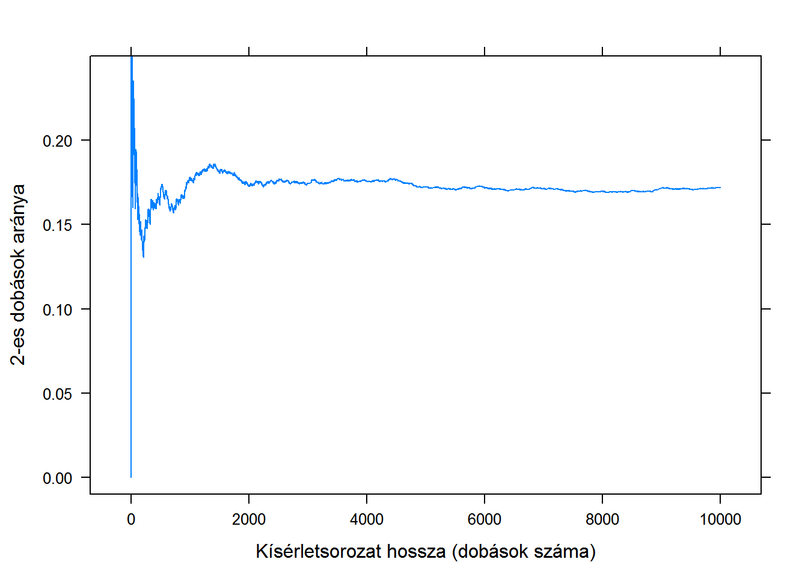
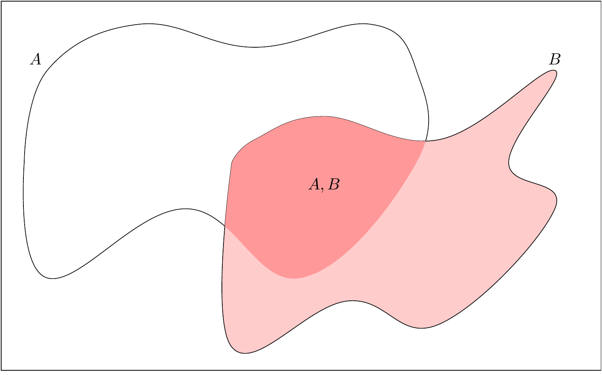
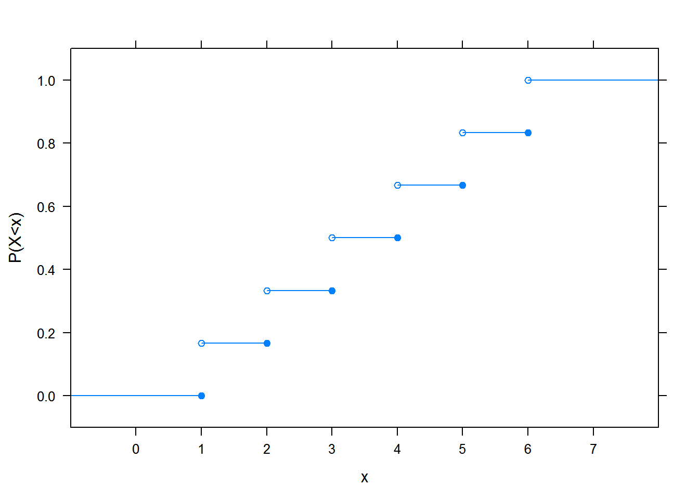
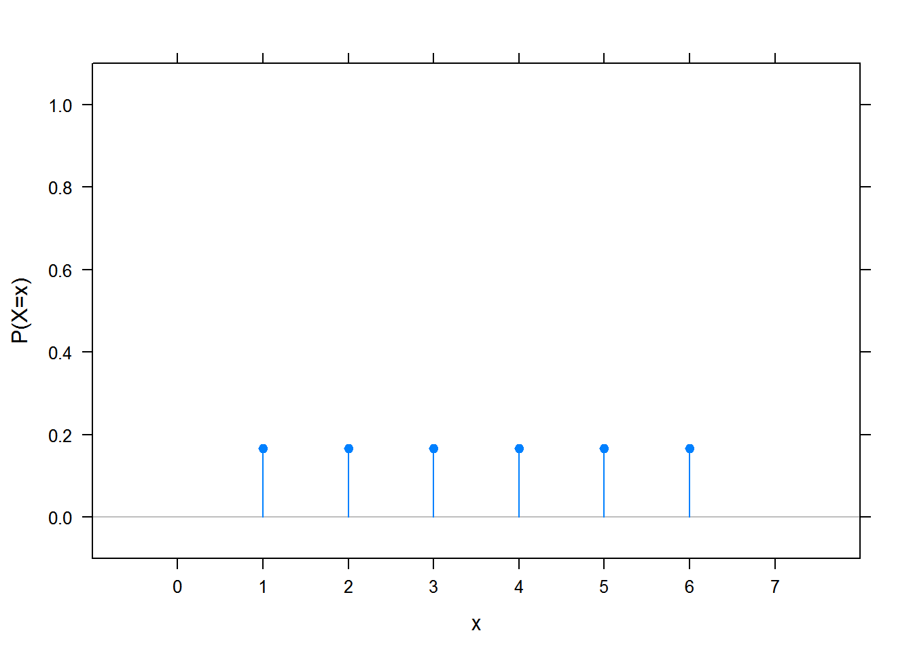
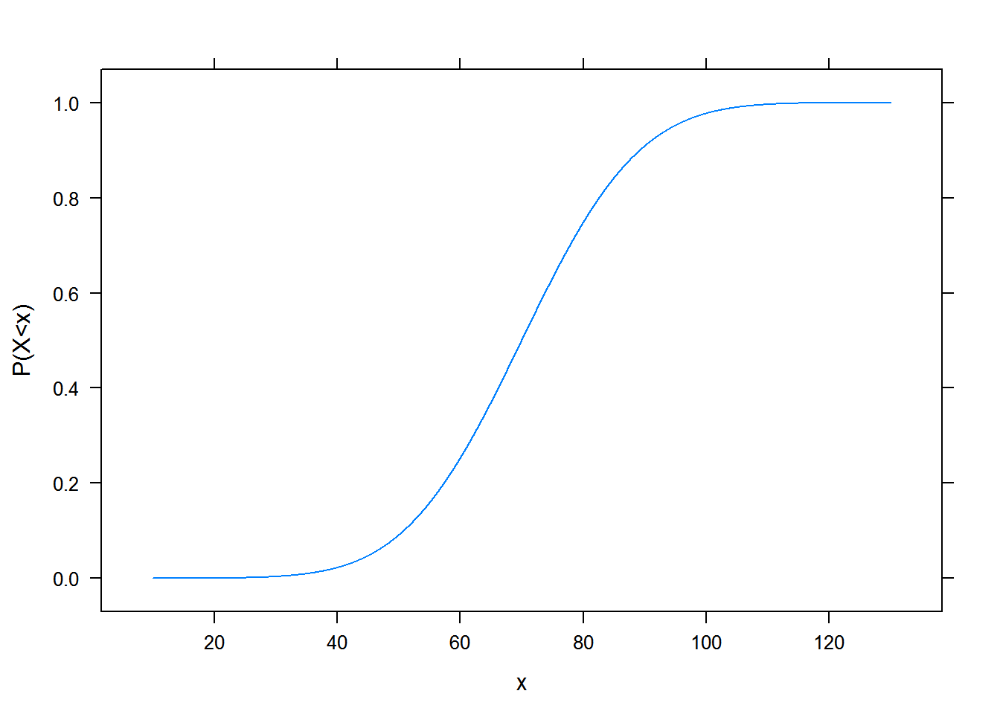
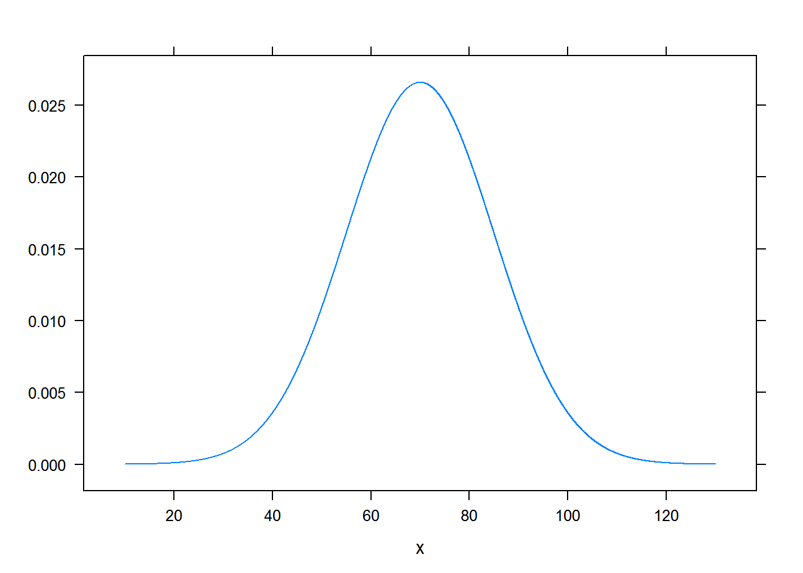

1 . fejezet A valószínűségszámítás röviden
A statisztikusok számára a valószínűség-számítás vagy – rosszabb esetben – gonosz nagytestvér, akire titokban irigykedik mindenki, mert az igazi
matematika, cserében a felét nem érti az ember, vagy – jobb esetben – az a segédtudomány, de jobb lenne azt mondani: alaptudomány, amihez egy halom esetben vissza lehet nyúlni a statisztikai problémák kezelése során. A valószínűségszámítás megértése tehát megkerülhetetlen (pontosabban szólva: nem érdemes megkerülni!) ahhoz, hogy az ember jól megértse a statiszikát. Nem kell valószínűségszámítási szaktudósnak lenni, ellenkezőleg, pár alapfogalom lesz csak igazán fontos – de azokat tényleg jól kell érteni.
Ez a fejezet ezt a célt szolgálja. Összhangban az Előszóval mondottakal, kerülni fogok minden matematikai formalizmust, képletet, levezetést, szépen kimondott tételt, ami tudom, hogy elkerülhetetlenül trehányságokhoz fog vezetni, ezért előre valszámos barátaink elnézését kérem, de cserében igyekszem hangsúlyozni azokat a koncepciókat, amiket fontos átlátni a későbbiekhez. (A statisztika és a valószínűségszámítás viszonyára pedig még visszatérek később, amikor mindkettő megfelelő fogalmai és problémái ismertek lesznek.)
1.1 Mi az, hogy véletlen?
Szokták mondani, hogy a valószínűségszámítás alapfogalma a véletlen kísérlet és hogy ennek definíciója: valami, ami adott körülmények között akárhányszor végrehajtható vagy megfigyelhető, de a kimenete nem mondható meg biztosan (csak az ismert, hogy milyen kimenetei lehetségesek egyáltalán), például mert az ismereteink hiányosak, hogy pontosan meg tudjuk előre mondani a kimenetet.
Az elnevezés második szava jó szerencsétlen, mert a valószínűségszámítás egy halom olyan dolgot vizsgál, ami nem kísérlet a szó szokásos tudományos értelmében, azaz nem mi hajtjuk végre, de még csak az sem világos első látásra, hogy milyen értelemben ismételhető meg akárhányszor. Az orvostudományban vizsgálhatjuk például azt, hogy egy beteg meggyógyul-e. Hogy ez nagyon sokszor tényleg olyan, ami nem mondható meg biztosan, az vitathatatlan, na de hogy kísérlet? És akárhányszor megfigyelhető?! A pszichológiából, szociológiából stb. nem csak hogy milliónyi hasonló példát lehetne hozni, de ezeken a területeken pont hogy nem tipikus, hogy kísérletet végzünk. Fogjuk fel ezt hagyományos elnevezésként, ami az olyan hétköznapi példákból jött mint a kockadobás, amit tényleg napestig ismételgethetünk azonos körülmények között, kísérletként.
A véletlen
szó viszont látszólag teljesen rendben van, ez tényleg jól megfelel nyelvileg annak, hogy a kimenete nem mondható meg biztosan
. Valójában ezen is érdemes kicsit elmorfondírozni. A Mi a véletlen? kérdés nagy részét átutalom a filozófia tárgykörébe, itt most egy aspektust szeretnék érinteni: azt, hogy a válasz nagyon gyakran igazából azon is múlik, hogy mi milyen közelítési pontosságot választunk, mit hanyagolunk el és mit nem. Vegyük a kockadobást! Az előző bekezdésben is szerepelt, mint valami nyilvánvalóan
jó példa a véletlenre, de ha jobban meggondoljuk, akkor igazából a kockadobás kimenete – az előbbi értelemben – nem véletlen, mert nagyon is megmondható: ha ismerjük az eldobás pillanatában a kocka sebességét, gyorsulását, a légellenálással kapcsolatos adatait, az ütközési tényezőjét az asztallal találozáskor stb. akkor elvileg tökéletesen pontosan, determinisztikusan megmondható, hogy hányast fog mutatni, ehhez csak a fizikát kell tudni. Ha valaki azt gondolná, hogy ez csak ilyen elvi jelentőségű, akadémikus akadékoskodás, akkor gondoljon arra, hogy pár évvel ezelőtt a laikus sajtóban is hír volt az az okostelefonra fejlesztett alkalmazás, amivel ha az ember levideóz egy rulettkereket, akkor még pörgés közben meg tudja jó eséllyel mondani, hogy hová fog érkezni a golyó! (Ezen képesség szerény kezdőtőke birtokában nagyon is gyakorlati jelentőségű és kevéssé akadémikus előnyökre átváltható.) Pedig hát a rulettkerék pörgetésénél ideáltipikusabb példát aligha lehet találni arra, hogy mi véletlen
… És tessék – ugyanazon múlt a dolog, hogy a kameraképen megkeressük a golyót, meghatározzuk a gyorsulását, ezt bedobjuk a mozgására vonatkozó fizikai egyenletekbe stb., és így egy sztochasztikus dolgot determinisztikussá teszünk.
Úgyhogy fogalmazzunk úgy: a továbbiakban olyan jelenségekkel foglalkozunk, amik az aktuális közelítési szintünkön véletlenek. Persze jobb, ha ezek véletlenségét ki tudjuk küszöbölni, de akkor is kell valamit tennünk, ha erre nincs mód (mint ahogy sok esetben nincs, és a belátható jövőben nem is lesz). Ekkor fog jól jönni a valószínűségszámítás.
1.2 A valószínűségszámítás alapfogalmai
Most hogy tisztáztuk a véletlen kísérlet tartalmát, menjünk tovább az alapfogalmak bevezetésében. Mindenekelőtt szükségünk van a véletlen kísérlet lehetséges kimeneteleire, ezeket, roppant kreatív módon, hivatalosan kimenetelnek nevezzük1, kockadobásnál ilyen a ⚀ vagy a ⚂ (szándékosan nem számot írtam!). A kimenetelekből mindig pontosan egy következik be: nem lehet az, hogy kettő (nem dobhatok egyszerre ⚀-et és ⚂-at), és nem lehet az sem, hogy egy sem (nem lehet, hogy amit dobok az nem ⚀, nem ⚁, nem ⚂, nem ⚃, nem ⚄ és nem ⚅). A lehetséges kimenetelek összességét, tehát mindent ami kijöhet a kísérletből, eseménytérnek szokás nevezni. Valamilyen dolgokat akarok összefogni… erre a jó matematikai objektum a halmaz lesz! Tehát az eseménytér egy halmaz, ami minden lehetséges kimenetelt tartalmaz. A kockadobásnál: \(\left\{⚀,⚁,⚂,⚃,⚄,⚅\right\}\).
Ez egy meglehetősen egyszerű helyzet, hiszen az eseménytér véges sok kimenetelből áll. Bonyolultabb a szituáció akkor, ha mondjuk azt vizsgáljuk, hogy egy véletlenszerűen kiválasztott magyar lakos hányszor járt külföldön életében. Ez lehet 0, 1, 2, 3, 4,… de hol a vége? A válasz az, hogy sehol! Semmilyen számra nem mondhatjuk azt, hogy na, legfeljebb ennyiszer lehetett külföldön járni…! (Az rossz érvelés, hogy nézzük meg, hogy mennyi az eddigi magyar rekorder. Mondjuk azt találjuk, hogy 123-szor járt külföldön… és? Akkor mondhatjuk, hogy legfeljebb 123-szor lehet külföldön járni? Nyilván nem, a világon semmi akadálya nincs, hogy valaki 124-szer járjon. De akkor 124 a maximum? Nem, miért ne lehetne utána még egyet utazni.) Összességében tehát világos, hogy az nem korlátos, hogy valaki hányszor járhatott külföldön, így az eseménytér a \(\left\{\text{,,0-szor járt''},\text{,,1-szer járt''}, \text{,,2-szer járt''},\dots{}\right\}\) halmaz. Ez tehát már végtelen halmaz! De a matematikusok úgy mondják: megszámlálhatóan végtelen, ami azt jelenti, hogy végtelen ugyan, de az elemeit fel lehet sorolni egymás után (hát persze, az előbb ezt meg is tettük). Még durvább a helyzet akkor, ha mondjuk azt kérdezzük, hogy mekkora egy véletlenszerűen kiválasztott ember testtömege. Lehet mondjuk 70 kg, de lehet 70,5 is. Vagy 70,48. Vagy 70,477. Vagy 70,4779. Azaz ez is végtelen sok értéket vehet fel! (Valaki azt mondhatja, hogy de hát a mérlegen csak az egész kilogrammokat lehet leolvasni. Persze, így tényleg véges sok érték lehetséges csak, de vegyünk jobb mérleget, amin tizedek is vannak. Még jobbat, amin századok is, és így tovább. A lényeg, hogy elvileg a testtömeg bármilyen valós szám lehet, most függetlenítsük magunkat attól, hogy a mérőeszközünk ezt csak korlátozott pontossággal tudja lemérni, vegyük úgy, hogy a vizsgált jellemző az igazi testtömeg, mintha lenne korlátlan pontosságú mérlegünk.) Ez tehát végtelen sok lehetséges kimenet, de az előzőnél is jobban végtelen, abban az értelemben, hogy ezeknek az elemeit már fel sem lehet sorolni! (Azaz nem lehet megmondani, hogy egy adott értékre mi a rákövetkező. Mert egész számok körében világos, hogy 70 után 71 jön. De a valós számok között mi jön a 70 után? 70,1? Nem, mert a 70,01 közelebb van. Akkor 70,01? Nem, mert a 70,001 közelebb van. Akkor 70,001? És így tovább, szóval a valós számok jobban végtelenen
vannak mint az egészek, hiszen fel sem lehet őket sorolni; ezt szokták nem megszámlálható végtelennek nevezni.) Az érdekes az, hogy az ember azt gondolná, hogy a három eset között a nagy különbség ott van, hogy az eseménytér véges vagy végtelen, az már részletkérdés, hogy mennyire – megszámlálhatóan vagy nem megszámlálhatóan – végtelen. Ez nem így van! A helyzet az, hogy a véges és a megszámlálhatóan végtelen eset kezelése nagyon hasonló, ami igazán eltér, az a megszámlálhatatlanul végtelen eseménytér. A véges, vagy legfeljebb megszámlálhatóan végtelen eseményteret diszkrét eseménytérnek, a nem megszámlálhatóan végtelen eseményteret folytonos eseménytérnek szokták nevezni.
Most, hogy ezeken túl vagyunk, jöhetnek végre a valószínűségek! Ha már kimeneteleink vannak, akkor azt gondolhatnánk, hogy azokhoz szeretnénk valószínűséget rendelni, például megmondani, hogy mekkora valószínűséggel dobunk ⚀-et. Nem ezt fogjuk tenni! Szeretnénk ugyanis valószínűséget rendelni bonyolultabb dolgokhoz is, például ahhoz, hogy páros számot dobunk
. Ennek megragadásához ismét a halmazokhoz fordulunk: a kimenetelekből egyet vagy többet bepakolunk egy halmazba, mondjuk így: \(\left\{⚁,⚃,⚅\right\}\) ,elnevezzük ezt eseménynek és azt mondjuk, hogy egy esemény akkor következik be, ha olyan kimenetel áll elő, ami az eseménynek – mint halmaznak – az eleme. Világos tehát, hogy az előbbi esemény tényleg azt jelenti, hogy páros számot dobtunk
. Hasonlóképp definiálhatunk tetszőleges további eseményt. Például a \(\left\{⚀,⚁,⚂,⚃\right\}\) esemény akkor következik be, ha ⚀-et dobunk, ⚁-t dobunk, ⚂-t dobunk vagy ⚃-et dobunk, hiszen egy esemény akkor következik be, ha olyan kimenetel jön ki, ami benne, mint halmazban benne van – magyarul elmondva ez lesz az, hogy 4-nél nem nagyobb számot dobtunk
. Az eseményeket általában az \(A\), \(B\), \(C\), … betűkkel jelöljük, például \(A=\left\{⚁,⚃,⚅\right\}\).(De akkor azt nem is tudjuk megmondani, hogy mekkora valószínűséggel dobunk ⚀-et?! Dehogynem! Vegyük azt az – egyelemű! – halmazt, hogy \(\left\{⚀\right\}\), és meg is vagyunk! A világon semmi nem tiltja, hogy egy eseménybe csak egyetlen kimenetelt pakoljunk be. Világos tehát, hogy ez a megközelítés csak általánosítja, kiterjeszti azt, mintha a kimentelekhez rendelnénk valószínűségeket.) Természetesen az is egy esemény, ami az összes kimenetelt tartalmazza (vagyis az esemény maga az eseménytér), ezt szokták biztos eseménynek nevezni, és az üres halmaz is egy esemény, ezt pedig lehetetlen eseménynek hívjuk. Az elnevezések teljesen logikusak: a biztos esemény biztosan bekövetkezik, hiszen mindenképp olyan kimenetel jön ki, ami benne van (lévén, hogy az összes benne van), a lehetetlen pedig soha, hiszen egyetlen kimenetel sincsen benne (mivel üres halmaz), azaz bármelyik kimenetel is következik be, soha nem lesz igaz, hogy a bekövetkező kimenetel benne van.
Ennek a megközelítésnek van még egy előnye. Mondjuk, hogy szeretnénk arról az eseményről beszélni, hogy 4-nél nem nagyobb páros számot dobunk
. Mi lesz ennek a halmaza? \(\left\{⚁,⚃\right\}\). De vegyük észre, hogy ez nem más, mint a két előző halmaz metszete! Persze, mert annak, hogy 4-nél nem nagyobb és páros
azok a kimenetelek felelnek meg (azok kijövetele esetén következik be ez az esemény), amik egyszerre benne vannak abban, hogy 4-nél nem nagyobb
és abban, hogy páros
. Az események és
-sel történő összekapcsolásának tehát megfelel az, hogy a halmazaik metszetét képezzük. Kitérő megjegyzés: ha két esemény metszete üres halmaz, az magyarul azt jelenti, hogy nem következhetnek be egyszerre (például 2-nél nem nagyobbat dobunk
és 4-nél nem kisebbet dobunk
); ezeket szokás kizáró eseménynek nevezni. Továbbmenve, annak az eseménynek, hogy 4-nél nem nagyobb vagy páros számot dobunk
a két halmaz uniója fog megfelelni, gondoljuk végig. Tehát a vagy
-gyal történő összekapcsolásnál sem kell semmin gondolkoznunk, a vagy
használatával kapott esemény(nek megfelelő halmaz) a két esemény, mint halmaz uniója lesz. Egy szó mint száz, azt látjuk, hogy az események ilyen verbális
képzésének megfeleltethetünk szokásos halmazelméleti műveleteket.
A végére még egy, de fontos megjegyzés. Valaki ezen a ponton esetleg azt mondhatja, hogy ne is gondolkozzunk azon, hogy mely eseményekhez rendelünk valószínűséget, egyszerűen vegyük a kimenetelekből képezett összes lehetséges halmazt (az üres halmazt, az összes kimenetelt mint egyelemű halmazt, az összes két kimenetelből álló eseményt, és így tovább, egészen az összes öt kimenetelből álló halmazig, és végül az egész eseménytérig). És akkor nem kell semmin gondolkoznunk, bárkinek bármilyen esemény jut is az eszébe, mindegyikhez lesz valószínűség. Ez nagyon csábítóan hangzik – de sajnos nem fog működni. Hogy egész pontos legyek, diszkrét eseménytereknél működik, ott nyugodtan csinálhatjuk ezt, de folytonos esetekben nagyon csúnya dolgok történnének, ha megpróbálnánk szó szerint minden elképzelhető eseményhez valószínűséget rendelni. Éppen ezért be kell vezetnünk még egy fogalmat: azon események halmazát, amihez szeretnénk egyáltalán valószínűséget rendelni. Diszkrét esetben ez lehet az összes lehetséges esemény, de folytonos esetben szűkebb lesz nála. A dolgot nem tehetjük meg akárhogy, bizonyos követelményeket ki kell elégítenünk (csak példának okáért: ha két eseményhez rendelünk valószínűséget, akkor kötelező az uniójukhoz, tehát a vagy
-gyal összekapcsoltjukhoz is rendelni valószínűséget, de igaz lesz az is, hogy az és
-sel összekapcsoltjukhoz is kell legyen valószínűség rendelve), de ez most számunkra nem annyira fontos, a lényeg, hogy lesz egy halmazunk, amikben azok az események vannak, amikhez valószínűséget rendelünk. Hívjuk ezt a megfigyelhető események halmazának. (Ez inkább csak terminológia, ne akarjunk szükségképp a megfigyelés
hétköznapi szavával kapcsolatba hozni. Fogjuk fel úgy, hogy ez egy elnevezés, egyszerűen így hívjuk azokat az eseményeket, amikhez valószínűséget fogunk rendelni.)
1.3 A valószínűség bevezetése
És akkor végre: jöhet a valószínűség! A fentiek után a dologban nem lesz sok meglepetés: a valószínűség egy függvény, amely a megfigyelhető események mindegyikéhez hozzárendel egy valós számot. Például lehet egy ilyen hozzárendelés egyik eleme az, hogy \(\left\{⚁,⚃,⚅\right\}\mapsto0,\!3\). Azaz a párosat dobunk
eseményhez 0,3 valószínűséget rendelünk. (Hétköznapi szóhasználatban azt mondanánk: 30%. A kettő ugyanaz, hiszen a százalékjel egyszerűen egy szorozva 0,01-gyel
-t helyettesít. A valószínűségszámításban, matematikában egyszerűbb az élet, ha 0,3-at mondunk.) A valószínűség jele2 \(\mathbb{P}\), tehát \(A\) esemény valószínűséget \(\mathbb{P}\left(A\right)\)-val jelöljük, előbbi példánkban: \(\mathbb{P}\left(A\right)=\mathbb{P}\left(\left\{⚁,⚃,⚅\right\}\right)=0,\!3\).
És meg is vagyunk, ez a valószínűség!
Ez eddig igazán nem agysebészet, de az érdekes rész most jön. 1933-ban Kolmogorov szovjet matematikus azt mondta, hogy három dolgot követeljünk meg ettől a függvénytől. Tehát ne akárhogy rendeljünk valószínűségeket a megfigyelhető eseményekhez, hanem csak az lesz elfogadható hozzárendelés, ami a következő három dolgot tudja:
- A valószínűségek nemnegatívak (nem lehet olyan, hogy például \(\left\{⚁,⚃,⚅\right\}\mapsto- 0,\!2\)).
- A biztos esemény valószínűsége 1 (nem lehet olyan, hogy például \(\left\{⚀,⚁,⚂,⚃,⚄,⚅\right\}\mapsto 1,\!1\) vagy \(\left\{⚀,⚁,⚂,⚃, ⚄ ,⚅ \right\}\mapsto 0,\!7\)).
- Kizáró események uniójának, tehát
vagy
-gyal összekapcsoltjának a valószínűsége a valószínűségeik összege (nem lehet olyan, hogy például \(\left\{⚀,⚁\right\}\mapsto 0,\!1\) és \(\left\{⚄,⚅\right\}\mapsto 0,\!2\), de közben \(\left\{⚀,⚁,⚄,⚅\right\}\mapsto 0,\!4\)).
Magyarázatot igazából csak a legutolsó követelmény érdemel, a másik kettő megfelel annak, amit a valószínűség
fogalomról hétköznapilag is mondanánk. A harmadik követelmény megértéséhez a legjobb, ha úgy gondolunk az eseményekre mint pacákra egy festővásznon. Még jobb, ha úgy vesszük, hogy a kimenetelek pontok, és az események, a pacák, úgy készültek, hogy egy vagy több pontot lefestettünk adott színnel. Egy jó elképzelés, és nem csak a szemléletesség kedvéért, hanem mélyebb értelemben is, ha a valószínűségre úgy gondolunk, mint a pacák területére. (Ez az első két axiómát is szépen hozza: az első azt mondja, hogy egy festékpaca területe nem lehet negatív, a második pedig azt, hogy a festővászon teljes területét nevezzük 1-nek.) A kizáró esemény
ebben az analógiában azt jelenti, hogy két paca nem fed át egymással, az események uniója
pedig az a paca, melyben színvak módon nézzük a pacákat; így a 3. követelmény azt mondja, hogy két paca együttesének a területe a külön-külön vett területeik összege – ha nem fednek át. (Világos, hogy átfedő pacáknál ez nem teljesül, hiszen ilyenkor, ha egyszerűen összeadjuk a két paca külön-külön vett területét, akkor az átfedő részt kétszer is beszámoltuk.)
Nagyon fontos volt az a kifejezés, hogy Kolmogorov azt mondta
: ezek a követelmények nem vezethetőek le semmiből, nem következményei valamilyen megfontolásnak, nem lehet matematikai úton előállítani őket. Azért használjuk őket, mert ha nem ezt tennénk, akkor maga Andrej Nyikolajevics Kolmogorov nézne ránk szúrós szemmel a felhő széléről amin most lógatja a lábát, ezt pedig igazán nem akarhatjuk. Az ilyen, bizonyítás nélkül elfogadott állításokat szokás axiómának nevezni; amiről tehát most szó van, az a valószínűségszámítás Kolmogorov-féle axiómákon alapuló felépítése3. Létjogosultságát az adja, hogy ezt a jegyzetet az ember elolvashatja egy mobiltelefonon, ami mobilneten keresztül hozta be, miközben zenét hallgat rajta, és azért tudja, hogy merre kell sétálnia, mert egy Föld körül keringő műholdakról sugárzott jelből a mobilja néhány méteres pontossággal meg tudta határozni, hogy hol van. Nem kell magyarázni, hogy ezek mindegyike elképesztően mély sztochasztikát (is) igényel… és a mellékelt ábra szerint meglehetősen jól működik.
Semmi másra nincs tehát szükségünk, ebből a háromból axiómából létrehozható a valószínűségszámítás egész építménye.
1.4 A valószínűség interpretációi
Nagyon fontos látni, hogy ez eddig egy tisztán matematikai konstrukció volt, nem kellett, hogy bármi köze legyen a valósághoz. Mondhatom azt, hogy egy szabályos kockával dobva \(\left\{⚀\right\}\mapsto 0,\!9\), és tessék, nem történt semmi. Nem robbant fel a számítógép, fel lehet erre is építeni egy valószínűségi modellt (mindaddig természetesen, amíg a három axiómát betartjuk!).
…persze azért mi szeretnénk, hogy a modelljeinknek netán valami köze is legyen a valóságos jelenségekhez. Azt szeretnénk, hogy vonatkoztatható legyen a valóságra, az elméleti konstrukciónkat tudjuk valamilyen kézzelfogható dologként értelmezni. Ezt szokás a valószínűség intrepretációjának nevezni.
Ezzel megint részint a filozófia tárgykörébe kerülünk, amit ismét alapvetően el fogok kerülni, e helyütt talán elég egy ilyen interpretációt megemlíteni – részben, hogy érthető legyen, hogy fogalmilag mit jelent az, hogy a valószínűség interpretációja
, részben mert ez az egyik legérthetőbb, és részben mert a gyakorlatban is ezt használják a legtöbbször (beleértve a statisztikai alkalmazásokat is).
Ez a valószínűség frekventista interpretációja, aminek az alapgondolata borzasztóan egyszerűen elmondható. Fogjunk egy dobókockát és kezdjük el dobálgatni, feljegyezve, hogy hányszor dobtunk – mondjuk – 2-est. Nevezzük ezt a 2-es dobás gyakoriságának4 a kísérletsorozatunkban. Ez önmagában nem túl izgalmas: nyilván annál nagyobb lesz, minél hosszabb a kísérletsorozat, tehát minél többször dobtunk. Nézzük inkább azt, hogy az esetek mekkora hányadában dobtunk 2-est, tehát a gyakoriságot összuk el a dobások számával; ezt szokás relatív gyakoriságnak nevezni. Ha ezt ábrázoljuk grafikusan a dobások számának függvényében, akkor valami ilyesmit kapunk:

(Én ezt persze most számítógépen szimuláltam, azonban bármilyen elképesztő, de a hőskorban, a 18. században tényleg végrehajtottak ilyen és ehhez hasonló kísérletsorozatokat kézzel, majd ábrázolták az eredményt mint itt!)
Azt látjuk tehát, hogy a relatív gyakoriság, szemben a sima gyakorisággal, nagyon is izgalmasan viselkedik: úgy tűnik, hogy az értéke konvergál valamihez! Ha ezt sokszor megismételjük, akkor mind hasonló képet kapunk, a relatív gyakoriság – ebben a példában – \(1/6\)-hoz tart. Fordítva megfogalmazva azt is mondhatjuk: a relatív gyakoriság értéke ingadozik valamilyen érték, mint itt az \(1/6\) körül – és a frekventista interpretáció azt mondja, hogy ez az érték épp a valószínűség lesz.
Nagyon egyszerűen szólva tehát a frekventista interpretáció a következő: a valószínűség az, amihez a relatív gyakoriság tart! Ennek az interpretációnak később még sok egyéb vetülete is lesz, de számunkra most ennyi elég: a valószínűség absztrakt, matematikai fogalmát hozzáhorgonyoztuk valamilyen tényleges valóságban tapasztalható, fizikai jelenséghez. Hiszen a frekventista interpretáció így azt mondja: ha tudni akarjuk egy esemény valószínűségét, akkor végezzünk egy jó hosszú kísérletsorozatot, számoljuk az esemény relatív gyakoriságát, és nézzük meg, hogy ez mihez tart.
Szabályos kockánál azt fogjuk tapasztalni, hogy minden kimenet azonosan \(1/6\) valószínűségű, és hogy bármely esemény valószínűsége a benne lévő kimenetek darabszáma szorozva \(1/6\)-dal. (Tehát például a páros dobás valószínűsége \(3 \cdot\frac{1}{6}=3/6=1/2\), annak valószínűsége, hogy a dobott szám 5 vagy annál nagyobb \(2 \cdot\frac{1}{6}=2/6=1/3\).)
Ahogy mondtam, a további interpretációkról nem akarok itt beszélni, de talán azért arra érdemes felhívni a figyelmet, hogy miért vannak egyáltalán további interpretációk, milyen problémáig vannak a frekventista iskolának. Egyetlen illusztráció, csak gondolatébresztés gyanánt: teljesen természetesnek vesszük, ha a híradó végén az időjárásjelentés azt mondja, hogy 30% a valószínűsége annak, hogy holnap esni fog az eső
. De gondoljuk csak jobban végig, milyen értelemben beszélünk itt valószínűségről? Frekventista értelemben? Azaz ha nagyon sokszor kipróbálnánk, hogy holnap esik-e az eső, akkor a próbák nagyjából 30%-ában találnánk azt, hogy esik az eső…?
1.5 A feltételes valószínűség
Bár ez a fogalom csak valamilyen technikai apróságnak tűnhet, valójában egy borzasztó fontos koncepcióról van.
Az alapkérdés az, hogy hogyan tudunk a valószínűségbe valamilyen ismert információt beépíteni. Más szóval, ha tudjuk, hogy valami megtörtént, akkor ezen információ fényében hogyan módosul események valószínűsége? Hiszen ha van valamilyen részleges információnk, az nagyon is befolyásolhatja a valószínűségét egy eseménynek, például megtudjuk azt, hogy a dobott szám 3 vagy annál kisebb, az módosítja annak a valószínűségét, hogy párosat dobtunk (ahhoz képest mintha nem tudnánk semmit). Az elnevezés nagyon szerencsés, hiszen ezt úgyis kiolvashatuk: feltéve, hogy legfeljebb 3-ast dobtunk, mennyi annak a valószínűsége, hogy párosat dobtunk? A matematikusok így szoktak beszélni, de ehhez mindig tartsuk észben, hogy a feltéve
szót az előbbi értelmeben kell venni: ha ismerjük azt az információt, hogy legfeljebb 3-ast dobtunk, akkor ennek figyelembevételével, azaz ennek fennállása esetén mennyi a valószínűsége a páros dobásnak. Lényegében az a kérdés, hogy valamilyen állítást igaznak fogadva el (legfeljebb 3-ast dobtunk), erre szorítkozva, tehát leszűkítve a világunkat arra, ahol ez igaz, ezen belül mekkora a páros dobás valószínűsége.
Ez a legutolsó megfogalmazás már az utat is mutatja a számításhoz. Nevezzük \(A\)-nak azt az eseményt, aminek a valószínűségére kíváncsiak vagyunk (az előző példában \(A=\left\{⚁,⚃,⚅\right\}\)), \(B\)-nek pedig a feltételét, tehát amiről tudjuk, hogy megvalósult (\(B=\left\{⚀,⚁,⚂\right\}\)). Mi a valószínűsége, hogy párosat dobtunk, feltéve, hogy legfeljebb 3-ast dobtunk? Abban a világban vagyunk, amiben igaz, hogy legfeljebb 3-ast dobtunk, és azt kérdezzük, hogy – ezen belül! – mekkora valószínűséggel dobtunk párosat.
A kérdés megválaszolásához legjobb a festővászonra rajzolt pacás analógia, ahol az események a pacák, és a valószínűség pedig az, hogy a paca a vászon mekkora részét teszi ki. (Hiszen a pacának a területét mérjük, mégpedig úgy, hogy 1-nek a vászon területét neveztük.) Mit mondtunk most? Azt, hogy abban a világban vagyunk, amiben a \(B\), a feltétel teljesült, erre szűkítjük magunkat. Ez tehát azt jelenti, hogy a festővászon helyett a világunkat a \(B\) pacára szűkítjük le, és azon belül kérdezzük, hogy mekkora \(A\) területe. Mivel ez utóbbi (\(B\)-n belül \(A\) területe) nem más, mint \(A\) és \(B\) közös területe, így a kérdésünk egyszerűen annyi: \(A\) és \(B\) paca közös része \(B\) mekkora részét – nem a vászon mekkora részét – teszi ki! Ami persze nem más, mint \(A\) és \(B\) közös területe osztva \(B\) teljes területével:

Így tehát kapjuk a feltételes valószínűség definícióját, melyet úgy jelölünk, hogy \(\mathbb{P}\left(A \mid B\right)\), ahol \(A\) valószínűségét kérdezzük és \(B\) a feltétel:
\[
\mathbb{P}\left(A \mid B\right) = \frac{\mathbb{P}\left(A,B\right)}{\mathbb{P}\left(B\right)},
\]
ahol \(A,B\)-vel jelöltük azt, hogy \(A\) és \(B\)
(így a valószínűségüket a \(\mathbb{P}\left(A,B\right)\) jelöli).
Így lehet tehát egy ismert információ (\(B\)) beépítésével úgymond pontosítani egy valószínűséget! \(\mathbb{P}\left(A\right)\) a valószínűség mielőtt megtudnánk bármilyen plusz-információt, szokták emiatt ezt prior valószínűségnek nevezni, \(\mathbb{P}\left(A \mid B\right)\) pedig a valószínűség miután megtudtuk \(B\)-t, szokták ezt ezért poszterior valószínűségnek nevezni. A feltételes valószínűséggel tehát be tudjuk építeni az új ismeretet valamilyen valószínűségi kérdés megválaszolásába.
Az előbbi példánkat folytatva, szabályos kockánál annak a valószínűsége, hogy párosat dobunk és legfeljebb 3-ast dobunk
(\(\mathbb{P}\left(A,B\right)\)) \(1/6\), hiszen az egyetlen kimenet aminél előfordul az a 2-es dobás, és emlékezzünk vissza, hogy szabályos kockánál egy esemény valószínűsége a benne lévő kimenetek darabszáma szorozva \(1/6\)-dal. Annak a valószínűsége, hogy legfeljebb 3-ast dobunk (\(\mathbb{P}\left(B\right)\)) ugyanezen logikával \(3/6=1/2\), így a keresett feltételes valószínűség: \(\frac{1/6}{3/6}=1/3\). A kérdésünket tehát most már meg tudjuk válaszolni: annak a valószínűsége, hogy párosat dobtunk, feltéve, hogy legfeljebb 3-ast dobtunk \(1/3\).
(Észrevehető, hogy az osztásnak nincs értelme, ha \(\mathbb{P}\left(B\right)=0\). De hát ez logikus is: egy 0 valószínűséggel bekövetkező eseménynél nincs sok teteje egy olyan kérdésnek, ami úgy kezdődik, hogy feltéve, hogy ez bekövetkezik…
.)
A fenti definíciót átrendezhetjük a következő formába: \(\mathbb{P}\left(A,B\right)=\mathbb{P}\left(A \mid B\right)\cdot \mathbb{P}\left(B\right)\). Ez kiolvasva azt mondja, hogy két esemény együttes bekövetkezésének a valószínűsége egyenlő a feltételes valószínűséggel szorozva a feltétel valószínűségével. Persze az együttes valószínűség szimmetrikus (\(A,B\) ugyanaz, mint \(B,A\), hiszen az nyilván mindegy, hogy azt mondom, hogy \(A\) és \(B\) is bekövetkezett
vagy azt, hogy \(B\) és \(A\) is bekövetkezett
), \(\mathbb{P}\left(A,B\right)=\mathbb{P}\left(B,A\right)\), ezért nyugodtan írhatjuk ezt is: \(\mathbb{P}\left(A,B\right)=\mathbb{P}\left(B \mid A\right)\cdot \mathbb{P}\left(A\right)\).
Külön említést érdemel, ha két eseményre teljesül, hogy \(\mathbb{P}\left(A \mid B\right)=\mathbb{P}\left(A\right)\). Ez magyarán azt jelenti, hogy \(B\) ismerete nem változtatta meg \(A\) valószínűségét: az új információ se nem csökkentette, se nem növelte \(A\) fennállásának a valószínűségét. Ilyenkor szokták azt mondani, hogy \(A\) és \(B\) független események5. A páros dobás
és a legfeljebb 3-as dobás
tehát nem független események: \(1/2\) a valószínűsége annak, hogy párosat dobunk (önmagában, semmi mást nem tudva), de \(1/3\), ha tudjuk, hogy legfeljebb 3-ast dobtunk, tehát erre feltételezünk. A páros dobás valószínűsége tehát megváltozott, a poszterior valószínűsége nem ugyanaz mint a prior valószínűsége. Azonban párosat dobunk
és a legfeljebb 2-t dobunk
már függetlenek: a legfeljebb 2-t dobtunk ismeretében ugyanúgy \(1/2\) a páros dobás valószínűsége, mint ezen ismeret nélkül.
Helyettesítsük be a függetlenség definícióját a feltételes valószínűség definíciójába: \(\mathbb{P}\left(A \mid B\right) =\mathbb{P}\left(A\right)= \frac{\mathbb{P}\left(A,B\right)}{\mathbb{P}\left(B\right)}\). A második egyenlőségjel két oldalát véve és \(\mathbb{P}\left(B\right)\)-vel beszorozva azt kapjuk, hogy ha két esemény független, akkor \(\mathbb{P}\left(A,B\right)=\mathbb{P}\left(A\right)\cdot \mathbb{P}\left(B\right)\). Független események együttes bekövetkezésének a valószínűsége a külön-külön vett valószínűségeik szorzata.
Ebből az alakból még egy dolog látható rögtön. Ha a \(\mathbb{P}\left(A,B\right)=\mathbb{P}\left(A\right)\cdot \mathbb{P}\left(B\right)\) egyenlőség mindkét oldalát \(\mathbb{P}\left(B\right)\)-vel osztjuk le, akkor kapjuk azt, amivel indítottunk, hogy ti. \(\mathbb{P}\left(A \mid B\right)=\mathbb{P}\left(A\right)\). De teljes mértékben jogunkban áll \(\mathbb{P}\left(A\right)\)-val leosztani, ez esetben azt kapjuk, hogy \(\mathbb{P}\left(B \mid A\right)=\mathbb{P}\left(B\right)\). (Ne feledjük, ha egy együttes valószínűséget leosztunk az egyik tag valószínűségével, akkor feltételes valószínűséget kapunk: a másik tag feltételes valószínűségét feltéve azt, amivel leosztottunk.) Tehát a függetlenség \(\mathbb{P}\left(A \mid B\right)=\mathbb{P}\left(A\right)\) definíciója automatikusan jelenti azt, hogy szükségképp egyúttal \(\mathbb{P}\left(B \mid A\right)=\mathbb{P}\left(B\right)\) – azaz a függetlenség valószínűségi fogalma szimmetrikus, ha az egyik esemény független a másiktól, akkor a másik is független az egyiktől.
1.6 A Bayes-tétel
Egy nagy hírű – és tényleg rettentő fontos – tétel fog következni, ami azonban grandiózussága ellenére valójában pofon egyszerűen kihozható, tulajdonképpen csak a feltételes valószínűség definícióját kell kétszer alkalmazni. Egyfelől ugye azt mondtuk, hogy \(\mathbb{P}\left(A \mid B\right) = \frac{\mathbb{P}\left(A,B\right)}{\mathbb{P}\left(B\right)}\), másrészt azt is megállapítottuk – persze ugyanebből levezetve! –, hogy \(\mathbb{P}\left(A,B\right)=\mathbb{P}\left(B \mid A\right)\cdot \mathbb{P}\left(A\right)\). Tulajdonképpen semmi másra nincs szükségünk, mint hogy összerakjuk a kettőt, a másodikból származó \(\mathbb{P}\left(A,B\right)\)-t beírjuk az első számlálójába: \[ \mathbb{P}\left(A \mid B\right) = \frac{\mathbb{P}\left(B \mid A\right)\cdot \mathbb{P}\left(A\right)}{\mathbb{P}\left(B\right)}. \] És ennyi, ezzel meg is kaptuk a híres-nevezetes Bayes-tételt! A nevét Thomas Bayesről, egy 18. századi angol presbiteriánius lelkészről kapta, aki először alkalmazta ezt az elvet (igaz, írásban csak halál után jelent meg az erről szóló közleménye).
Miért fontos ez a tétel? Rögtön megértjük, hogy mire használható, ha a két végét nézzük: egyik oldalon \(\mathbb{P}\left(A \mid B\right)\) van, a másikon \(\mathbb{P}\left(A\right)\). Mit mondtunk? \(\mathbb{P}\left(A\right)\) az \(A\) esemény valószínűsége anélkül, hogy bármi többet tudnánk, \(\mathbb{P}\left(A \mid B\right)\) pedig a valószínűsége \(B\) ismeretében, tehát beépítve azt az információt, hogy \(B\) megtörtént. Azaz: a Bayes-tétel az, ami ténylegesen lehetővé teszi egy információ beépítését a valószínűségbe! Használva a korábban bevezetett szép kifejezéseket: lehetővé teszi, hogy a prior valószínűségekről – az információ felhasználásával – áttérjünk a poszterior valószínűségekre.
Később bőven látunk még arra példát, hogy ennek miért van hatalmas jelentősége; most nézzünk illusztráció gyanánt egy nem statisztikai példát!
Legyen \(A\) az, hogy egy vizsgált személy szenved egy betegségben, \(B\) pedig az erre vonatkozó pozitív lelet. Amennyiben az orvosi diagnosztika biztos lenne (ami – vegyük észre – azt is jelenti, hogy nem sztochasztikus!), azaz a pozitív lelet azt jelenti, hogy biztosan betegek vagyunk, a negatív pedig azt, hogy biztosan nem, akkor semmi probléma nincs, és nincsen szükség valószínűségszámításra. Sajnos azonban a legtöbb esetben nem ez a helyzet: a teszt néha még egészséges embernél is pozitív lesz, és néha betegnél is negatív. (Tökéletlen ismeretek, ugyebár!) Az, ha ebben a helyzetben végiggondoljuk a Bayes-tételt, egyúttal egy gyakorlatban is sok meglepetést okozó helyzetre is felhívja a figyelmet.
Nézzünk egy konkrét esetet! A kullancs terjesztette betegségek közül kettő igazán fontos a gyakorlatban, a kullancs terjesztette agyvelőgyulladás és a Lyme-kór. Ez utóbbi lesz kis példánk alanya. A Lyme-kór diagnosztizálása sajnos nem könnyű feladat. Különféle okokból kifolyólag a kórokozó közvetlen kimutatása általában nem lehetséges, ezért ún. szerológiai vizsgálatot végeznek, mely a kórokozó jelenlétére adott immunválaszt igyekszik kimutatni. Sajnos emiatt az egészséges emberek egy részében is pozitív lesz a teszt, például mert korábban átesett fertőzésen, de az immunológiai jelei még nem múltak el, ezt fogja a teszt – hibásan – jelenleg is zajló betegségnek hinni. A jelenleg legjobb tesztekkel nagyjából 99% csak
annak a valószínűsége, hogy egy egészséges embernél tényleg negatív leletet ad, tehát az esetek 1%-ában fordul elő az előbb leírt tévedés. Hasonlóképp, néha az is előfordul, hogy egy beteg embert tévesen egészségesnek minősít, például mert a vizsgálat időpontjában még nem alakult ki az immunválasz, így hiába beteg az alany, a teszt azt fogja hinni, hogy nincs baja. A jelenleg legjobb tesztekkel mintegy 90% annak a valószínűsége, hogy egy beteg alanynál tényleg pozitív lesz a teszt, 10% valószínűséggel téved, és a betegnél hibásan negatív leletet ad.
Vegyük észre, hogy ezek a számok mind feltételes valószínűségek! 99% a valószínűsége, hogy egészséges embert egészségesnek minősít? Ez tehát azt jelenti, hogy feltéve, hogy egészséges az alany, 99% a valószínűsége, hogy negatív lesz a lelet. Hasonlóképp: 1% a valószínűsége – az előbbiből adódóan –, hogy egészséges alanynál tévesen pozitív leletet ad. Ezt pedig úgy mondhattuk volna, hogy jobban látszódjon, hogy mitől feltételes valószínűségről van szó: feltéve, hogy egészséges az alany, 1% a valószínűsége, hogy pozitív lesz a lelet. 90%, hogy feltéve, hogy betegek vagyunk pozitív a lelet, és 10%, hogy feltéve, hogy betegek vagyunk mégis negatív a lelet. Ez tehát mind feltételes valószínűség, ahol arra feltételezünk, hogy igazából mi az állapotunk, és annak a valószínűségét kérdezzük, hogy a lelet milyen lesz.
Ennyi előzmény után nézzük meg a következő javaslatot: a biztonság kedvéért érdemes mindenkinek elmennie néha Lyme-kór tesztre, akkor is, ha nincsenek tünetei!
. Első ránézésre nagyon szimpatikus tanácsról van szó: mindannyian tudjuk, hogy mennyire fontos a betegségek megelőzése, ezerszer halljuk, hogy járjunk rendszeresen szűrésekre stb. Ha azonban egy nagyon kicsit utánaszámolunk a dolognak, akkor meglepő dolgokra bukkanunk.
A kérdés: ha pozitív lett a Lyme-kór tesztünk (emlékezzünk vissza, igen kitűnő tesztről van szó, 90% és 99% a jósága a két értelemben!), akkor mekkora valószínűséggel vagyunk tényleg Lyme-kórosak? (Borzasztó tanulságos megkérdezni ismerőseinket anélkül, hogy elmesélnénk nekik, hogy miért kérdezzük, csak megkérve őket, hogy zsigerből
válaszoljanak.) Az emberek túlnyomó része azt fogja mondani, hogy nagyon valószínű, hogy betegek vagyunk, a legtipikusabb válaszok a 90, meg a 99% lesznek. Hiszen hát meg is mondtuk, hogy ilyen jó a teszt, akkor most igazából mi ezen a nagy kérdés…?
Számoljunk egy picit! Ahogy mondtuk, legyen \(A\) az, hogy Lyme-kórosak vagyunk, \(B\) az, hogy pozitív lett a szerológiai tesztünk. Mit kérdeztünk, hogy mekkora valószínűséggel vagyunk betegek, ha pozitív a tesztünk? Ez épp \(\mathbb{P}\left(A \mid B\right)\). Az előző okfejtés hibája e ponton azonnal látszik: a 90% az nem ez, hanem az, hogy ha betegek vagyunk akkor mekkora valószínűséggel lesz a teszt is pozitív, tehát \(\mathbb{P}\left(B \mid A\right)\)! Pont a fordított irányú valószínűség! Ez tehát hibás, de akkor mi a helyes okfejtés? Erre lesz válasz a Bayes-tétel.
Két dologra van szükségünk, az egyik \(\mathbb{P}\left(A\right)\), a betegség prior valószínűsége, tehát, hogy mindenféle tesztelés előtt mennyi annak a valószínűsége, hogy betegek vagyunk. Erre szerencsére most könnyű válaszolni, ha ugyanis megfogadjuk a tanácsot, akkor ez igen jó közelítéssel annyi lesz, mint a betegek aránya az összlakosságon belül, ez ma Magyarországon kb. \(1/1000\). (Miért mondtam, hogy igen jó közelítéssel? Ezt nagyon fontos érteni: a betegek aránya az igazából nem más, mint a betegek relatív gyakorisága – hány beteg van: gyakoriság, mekkora az arányuk: relatív gyakoriság – és a magyar lakosság tízmilliós létszáma azt jelenti, hogy itt egy tízmillió hosszú, tehát hatalmas nagy kísérletsorozatot végeztünk, így a relatív gyakoriság már igen közel lesz a valószínűséghez.) Kell még \(\mathbb{P}\left(B\right)\), annak a valószínűsége, hogy a teszt pozitív, semmit nem tudva arról, hogy egészségesek vagyunk-e. Hogyan kapjuk meg ezt? Ehhez egy pici trükköt6 be kell vetnünk: a teszt pozitív és egészségesek vagyunk
, valamint a teszt pozitív és betegek vagyunk
két kizáró esemény (egyszerre nem állhat fenn mindkettő) így a vagy
-gyal összekapcsoltjuk valószínűsége a külön-külön vett valószínűségeik összege. Mi a vagy
-gyal összekapcsoltjuk? A teszt pozitív és egészségesek vagyunk vagy a teszt pozitív és betegek vagyunk
? Azt, hogy a teszt pozitív
azt felesleges kétszer leírnunk az meg, hogy betegek vagyunk vagy egészségesek vagyunk
az olyan, mintha nem írtunk volna semmit, tehát összességében ez az, hogy a teszt pozitív
– épp amire szükségünk van! So far, so good, ahogy a művelt francia mondaná, akkor már csak kell annak a valószínűsége, hogy a teszt pozitív és egészségesek vagyunk
, meg annak, hogy a teszt pozitív és betegek vagyunk
. Nindkettő egy együttes valószínűség, aminek nagyon megörülünk, mert rávágjuk, hogy az pedig nem más, mint a feltételes valószínűség szorozva a feltétel valószínűségével! Tehát annak a valószínűsége, hogy a teszt pozitív és egészségesek vagyunk nem más, mint annak a feltételes valószínűsége, hogy a teszt pozitív feltéve, hogy egészségesek vagyunk (ez tudjuk! 1%) szorozva annak a valószínűségével, hogy egészségesek vagyunk (\(1-1/1000=0,\!999\)). Teljesen hasonlóan annak a valószínűsége, hogy a teszt pozitív és betegek vagyunk nem más mint annak a feltételes valószínűsége, hogy a teszt pozitív feltéve, hogy betegek vagyunk (90%) szorozva annak a valószínűségével, hogy betegek vagyunk (\(1/1000\)). Az előbbi szorzat tehát \(0,\!01 \cdot 0,\!999=0,\!00999\), az utóbbi \(0,\!9 \cdot 0,\!001=0,\!0009\), és amint megbeszéltük, a keresett valószínűség egyszerűen e kettő összege: \(\mathbb{P}\left(B\right)=0,\!00999+0,\!0009=0,\!01089\).
És ezzel minden megvan, bevethetjük a Bayes-tételt: \[ \mathbb{P}\left(A \mid B\right) = \frac{\mathbb{P}\left(B \mid A\right)\cdot \mathbb{P}\left(A\right)}{\mathbb{P}\left(B\right)}=\frac{0,\!9 \cdot 0,\!001}{0,\!01089}=0,\!083. \] Az eredmény tehát az, hogy ha pozitív a leletünk, akkor 8,3% a valószínűsége annak, hogy tényleg betegek vagyunk! Nem 90, meg 99%, 8,3…! A pozitív leletünk azt jelenti, hogy még 10%-ot sem éri el annak a valószínűsége, hogy tényleg betegek vagyunk!
Az első és legfontosabb ezen eredmény kapcsán, hogy ne úgy tekintsünk rá, hogy itt kijött egy elég megdöbbentő dolog valami matematikai hókuszpókusz
eredményeként. Értsük meg, hogy mi ennek a megdöbbentő eredménynek az oka! Értsük a jelenség okát, ne fogadjuk el, hogy valami számok ledarálásából ez jött ki, és hát akkor ez van.
Mi a hibás kezdeti benyomásunk oka? Hogy lehet, hogy miközben a teszt kitűnően, 90 meg 99% jósággal működik, de a pozitív lelet mégis 90%-nál is nagyobb valószínűséggel azt jelenti, hogy igazából nem vagyunk betegek…? Kezdjük az elején: az érdekel minket, hogy ha pozitív a leletünk, mekkora valószínűséggel vagyunk betegek. Ki kap pozitív leletet? Az, aki beteg, és a teszt jól működik nála, meg az, aki egészséges, de a teszt sajnos hibás eredményt ad az esetében. Hány alany jön a kétféle forrásból? Elsőre azt gondolhatnánk, hogy az előbbi lesz a túlnyomó többség, hiszen ha valaki beteg, akkor a teszt 90% valószínűséggel jól működik nála, míg ha egészséges, akkor mindössze 1% valószínűséggel lesz hibás. Csakhogy ez hibás logika! A kutya ott van elásva, hogy a betegség ritka, azaz nagyon alacsony a tesztelés előtti valószínűsége annak, hogy betegek vagyunk, mindössze \(1/1000\). Emiatt ezerszer több egészségeset fogunk tesztelni, mint beteget. És ebben van a kulcs: az ezerszer több egészségesnek hiába csak 1%-a lesz pozitív, de az ezerszer több egészségesnek még az 1%-a is több, mint az ezredannyi beteg 90%-a! Ezen múlik a dolog. Kicsi a valószínűsége, hogy egy egészségest elnéz a teszt, de annyival sokkal-sokkal-sokkal több egészségeset tesztelünk, hogy még ezeknek a kicsi hányada is több lesz, mint a helyesen azonosított betegek. Így végeredményben a pozitív leletet kapó betegek többsége helytelenül azonosított egészséges, és nem helyesen azonosított beteg lesz.
Fontos azért azt is látni, hogy nem arról van szó, hogy a teszt rossz. A teszt bizonyos értelemben nagyon is működött: a pozitív lelet \(1/1000\)-ről kb. 10%-ra, azaz két nagyságrenddel emelte annak a valószínűségét, hogy tényleg betegek vagyunk! Az már egy másik kérdés, hogy nagyon alacsonyról indultunk, így az emelés utáni érték is elég alacsony lett.
A példa arra is felhívja a figyelmet, hogy mennyire fontos, hogy ne keverjük össze a feltételes valószínűség irányát, hogy \(\mathbb{P}\left(A \mid B\right)\)-ről vagy \(\mathbb{P}\left(B \mid A\right)\)-ról beszélünk. Amire feltételezünk, az mindig az ismert információ – hiszen a feltételes valószínűség építi be ezt az információt. Ha ilyen szemmel nézzük a példát, akkor láthatjuk, hogy a 90% meg a 99%-os jóságértékek a teszt jósága szempontjából relevánsak, de a gyakorló orvosnak, aki beteget kell, hogy diagnosztizáljon, nem fontosak: az nem érdekes, hogy feltéve, hogy beteg az alany mekkora valószínűséggel pozitív a teszt, hiszen ilyenkor olyasmire feltételezünk, amit az orvosi rendelőben nem tudunk, és annak a valószínűségét kérdezzük meg, amit tudunk! Természetes, hogy ennek pont a fordítottja kell, arra kell feltételeznünk, amit tudunk (pozitív a teszt), és annak a valószínűségét kell megkérdeznünk, amit nem tudunk (beteg-e az alany). Ehhez kell a Bayes-tétel, de a fentiből látható, hogy a kettő nagyon nem ugyanaz. Azért nem, mert az irány megfordításához
bejön a képbe a prior valószínűség.
1.7 A valószínűségi változó
Beszélő Barbiekiadás)
Az utolsó pont amit meg kell tárgyalnunk, tulajdonképpen a kiindulópont a valószínűségszámítás mélyebb (és matematikailag is intenzívebb) tárgyalásához, itt azonban mégis csak röviden fogunk vele foglalkozni, mert a továbbiakhoz nekünk nem igazán lesz rá szükségünk.
Az alapprobléma a következő: nagyon sokszor jól jön, ha a egy véletlen kísérlet eredményével valamilyen műveletet tudunk végezni. Például szeretnénk beszélni két kockadobás összegéről vagy tíz ember átlagos testtömegéről. Ez első ránézésre nyilvánvaló (ha az egyikkel 2-est dobtunk a másikkal meg 3-ast, akkor az összeg 5), de valójában nem az. A probléma, hogy a véletlen kísérlet eredménye az, hogy ⚁ meg az, hogy ⚂ ezeket pedig aligha lehet összeadni! A testtömeges példán talán kevésbé egyértelmű, de ott is erről van szó, a kimenet nem az, hogy 70, hanem az, hogy 70 kg
. De még világosabb, hogy mi a probléma, ha pénzérmét dobunk fel, ahol a két kimenet fej
és írás
, szóval ez még felületes szemlélőnek sem érthető úgy, hogy magától működnek a műveletek.
Elvileg persze lehetne mindenféle műveleteket bevezetni a kimenetekre is, de minek? Egyrészt a nulláról kellene ezeket felépítenünk, másrészt minden eseménytérre külön-külön meg kellene tennünk, miközben van egy nagyon jól ismert és jól értett matematikai struktúránk az ilyen műveletek elvégzésére… úgy hívják, hogy szám. Nem lenne jobb inkább azzal törődni, hogy leképezzük az eseményteret számokra, és ezzel el is van intézve a probléma? Ráadásul így egységesek lehetnénk, hiszen minden eseményteret ugyanarra az objektumra képettük le, a valós számokra.
A dolog nem is tűnik nehéznek: a ⚁-höz rendeljük hozzá azt, hogy 2 (mint szám), a 70 kg
-hoz azt, hogy 70 (mint szám) , a fej
-hez azt, hogy 1 (önkényesen, itt nincs olyan természetesen hozzárendelés) és így tovább. Az ilyen leképezést, függvényt, ami minden kimenethez hozzárendel egy valós számot, valószínűségi változónak nevezzük. A valószínűségi változókat általában az \(X\), \(Y\), \(Z\), … betűkkel jelöljük, tehát például egy lehetséges hozzárendelés, hogy \(⚁\mapsto 2\), amit úgy is írhatunk, hogy \(X\left(⚁\right)=2\). (Vigyázat, nincs kapcsos zárójel! Nem az eseményhez, hanem a kimenethez rendelünk számot.) Diszkrét eseménytérnél diszkrét valószínűségi változóról, folytonos eseménytérnél folytonos valószínűségi változóról szokás beszélni.
A valószínűségi változó használatával tehát a kimeneteket leképezzük számokra, amin már jól el tudunk boldogulni. Nagyon fontos, hogy ezzel a valószínűségeket is átvisszük a számokra, csak egy kis megállapodást kell tennünk: ha azt mondjuk, hogy mi annak a valószínűsége, hogy \(X=3\), azt úgy értjük, hogy mi azon kimenetekből álló esemény valószínűsége, amely kimeneteket a valószínűségi változó a 3-ba képezi (ami esetünkben egyszerűen a \(\left\{⚂\right\}\) valószínűsége), ha azt mondjuk, hogy mi \(X<3\) valószínűsége, azt úgy értjük, hogy mi azon kimenetekből álló esemény valószínűsége, amely kimeneteket a valószínűségi változó 3-nál kisebb számba képezi (jelen esetben az \(\left\{⚀,⚁\right\}\) esemény valószínűsége) és így tovább. És ezzel kész is vagyunk! Mindenféle ilyen számhalmaznak, tehát adott számnak, több számnak, intervallumnak stb. meg fogjuk tudni adni a valószínűségét. Ezzel \(X\)-re úgy is tekinthetünk mint egy számra, csak épp nem adott számra, hanem egy olyan valamire, ami többféle számot is felvehet értékül – de nem akárhogy, hanem bizonyos eloszlást követve.
(Egyedül arra kell figyelnünk, hogy a valós számok közül azokhoz akarjunk valószínűséget rendelni, de azokhoz mindegyikhez, amivel tényleg jól tudunk bánni – mert nem minden számhalmaz ilyen. Ez annyi megkötést jelent, hogy a jól kezelhető halmazokba képeződő kimenetek legyenek megfigyelhető események, hiszen emlékezzünk vissza, a megfigyelhető események halmaza épp az, amihez valószínűséget rendelünk.)
Annak a valószínűségét, hogy a valószínűségi változó egy adott számnál kisebb, tehát \(X<x\) valószínűségét (vigyázzunk a kis- és nagybetűkre! bal oldalon \(X\), tehát a valószínűségi változó van, jobb oldalon \(x\), ami egy általunk megadott tetszőleges valós szám) a valószínűségi változó eloszlásfüggvényének szokták nevezni. Ez csakugyan \(x\) függvénye, hiszen minden \(x\)-hez megad egy valószínűséget. Például szabályos kockadobásnál így néz kis:  (Figyeljük meg a nyílt és zárt karikákat! Mivel azt mondtuk7, hogy \(X<x\) valószínűsége érdekel minket, ezért azokat az ábra szerinti módon kellett kirakni, például pont 1-ben még 0 lesz a függvény értéke, hiszen 0 valószínűséggel kisebb a valószínűségi változó mint 1.)
Eloszlásfüggvénye minden valószínűségi változónak, diszkrétnek és folytonosnak is van.
Diszkrét valószínűségi változónál azokból az számokból is csak diszkrét sok van, amihez a valószínűségi változó nem nulla valószínűséget rendel, így általában érthetőbb képet ad, ha egyszerűen ezeket ábrázoljuk: 
Ezt szokás a változó valószínűségi súlyfüggvényének nevezni, de sokszor egyszerűen csak azt mondják rá, hogy ez a változó eloszlása.
Folytonos változó esetén zűrősebb a helyzet: be lehet látni, hogy egy folytonos valószínűségi változó minden konkrét értéket 0 valószínűséggel vesz fel! (Ha valakinek ezt nem venné be a gyomra – miért ne lehetne valakinek a testtömege pont 70 kg? – az gondoljon arra, hogy a folytonos eset az olyan, mintha végtelen pontosággal mérnénk. Igen, valakinek lehet pont 70 kg a testtömege – egy kilogramm pontossággal mérő mérlegelen. De ha lecseréljük egy jobb, tized kilogramm pontosságú mérlegre, akkor kiderül, hogy a 70 kg-nak mértek igazából 69,7 vagy épp 70,3 kg-osak. Persze lesz aki még így is 70, azaz 70,0, de ekkor vessünk be egy század kilogramm pontosságú mérleget. Ekkor megint kiderül egy sor emberről, hogy igazából nem 70,00 volt a tömegük. Aki még így is 70,00 marad, azokat lemérjük egy ezred kilogramm pontosságú mérlegen és így tovább. Talán így már jobban elhihető, hogy nulla valószínűségű esemény, hogy valaki 70,0000000… kg súlyú legyen, ha a pontossággal a végtelenbe tartunk.) Persze ez nagyon furcsa lehet, hiszen ha minden értéket nulla valószínűséggel vesz fel, akkor meg hogyan lehet, hogy valamilyen értéket mégis 1 valószínűséggel vesz fel…? De a végtelen ilyen furcsa dolgokat produkál: véges sok nulla összege nulla, sőt, végtelen soké is, ha az csak megszámlálhatóan végtelen – de nem megszámlálhatóan végtelen nulla összege lehet 1!
Folytonos valószínűségi változó eloszlásfüggvénye (ne feledjük, az létezik folytonos változóra is!) nézhet ki például így: 
Folytonos valószínűségi változónál annak tehát nincs értelme, hogy milyen valószínűséggel vesz fel a változó egy adott konkrét értéket (mert az minden értékre nulla), de szerencsére annak van értelme, hogy mivel arányos annak a valószínűsége, hogy egy adott érték kis környezetébe esik a felvett érték. Ez egyszerű műveletekkel meghatározható az eloszlásfüggvényből; az előbbi esetben így néz ki: 
Olyat nem mondhatunk, hogy ez a valószínűségi változó valószínűbb, hogy 70 értéket vesz fel, mint hogy 40-et (mivel mindkettőt nulla valószínűséggel veszi fel), de olyat a legteljesebb mértékben mondhatunk, hogy valószínűbb, hogy a 70 környékére esik, mint hogy a 40 környékére. Ezt a függvényt szokás a folytonos változó sűrűségfüggvényének nevezni (érzékletes szóval: milyen sűrűn esik a változó egy adott környékre); de itt is gyakori, hogy egyszerűen csak eloszlásról beszélnek.
Némelyik magyar irodalom a kimenetel helyett az elemi esemény terminológiát használja. Ez azonban nem egységes, az angol irodalom egységesen nem ezt hívja elemi eseménynek, ráadásul a kimenetel szó némileg logikusabb is, úgyhogy a továbbiakban ezt fogom használni.↩
A könyvek egy része \(\mathbf{P}\)-t használ, tehát vastagon szedi a betűt. Kézírásban persze senki nem fog nekiállni satírozgatni minden betűnél, ezért gyakran
duplaszárú
betűt használnak, ami viszont nagyon menőn néz ki, ezért érdekes módon visszaszivárgott a gépi szedésbe; én is ezt fogom használni.↩Mint azt ez a megfogalmazás is sejteti, lehetséges más axiómákból is felépíteni valószínűségszámítást (akár egészen meglepő módokon is, például megengedhetünk negatív valószínűséget is), de az elsöprően legnépszerűbb a Kolmogorov-féle axiomatizálás.↩
Innen jön ennek az interpretációnak az elnevezése. Csak sajnálni lehet, hogy a mai értelemben vett valószínűségszámítás még nem létezett a nyelvújítás korában, különben egész biztosan beszélhetnénk gyakoriságista értelmezésről. Úgyhogy folytassuk is kalandozásunkat a viszonyatlan hihetőség-számítás terén!↩
A valószínűségi értelemben vett függetlenségnek nem feltétlenül van köze a
függetlenség
hétköznapi értelméhez, mondjuk, hogy az egyik nem okozza a másikat: egyszerűen annyit jelent, hogy \(A\) esemény \(B\)-n belüli területe \(B\)-hez viszonyítva ugyanannyi mint \(A\) egész területe a festővászonhoz viszonyítva.↩E trükk logikáját teljes valószínűség tételének szokták nevezni.↩
Ez a magyar – és az egykori szovjet – szokás. A nyugati irodalmak gyakran \(X\leq x\) valószínűségével definiálják az eloszlásfüggvényt.↩